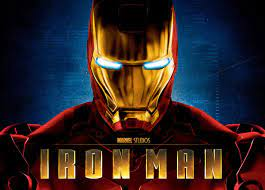
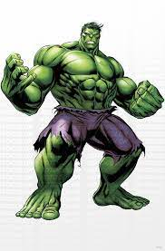
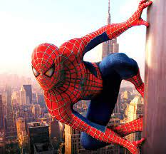

SOME OF MY FAV
AVENGERS
~ Bhuvana
IRONMAN
He conquered his personal demons and became a true Avenger and leader. He's an iconic hero for all to love and adore. In many ways, Tony Stark is the hero the big screen needed, but in other ways, he acts a bit more like a villain.

CAPTAIN AMERICA
Captain America is traditionally seen as one of the greatest heroes of the Marvel Universe. He is a righteous and brave man who always wants to see the good in people. From his origins as a superhero, Cap has always devoted himself to the protection of the weak and the defense of freedom and justice.

HULK
The Hulk's strength is probably the greatest in the Marvel universe, with many foes falling to his thunderous attacks. The Hulk is also able to leap great distances traveling for miles before bounding upwards again. For his size, the Hulk is incredibly fast and can run great distances at extreme speeds.

SPIDERMAN
Spider-Man's range of abilities makes him a powerful enemy to go against, even for some of the most powerful heroes of Marvel. His super-strength enables him to punch through walls with much ease. His agility helps him to evade bullets, and his spidey sense can detect threats moments before they actually take place.
